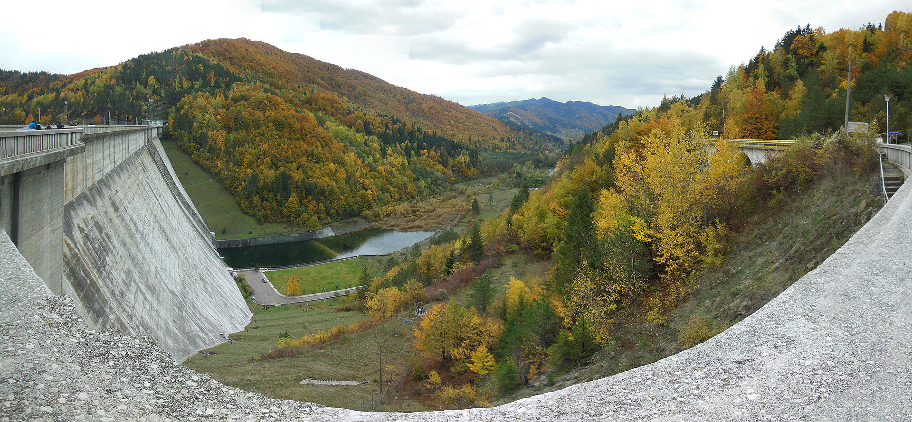
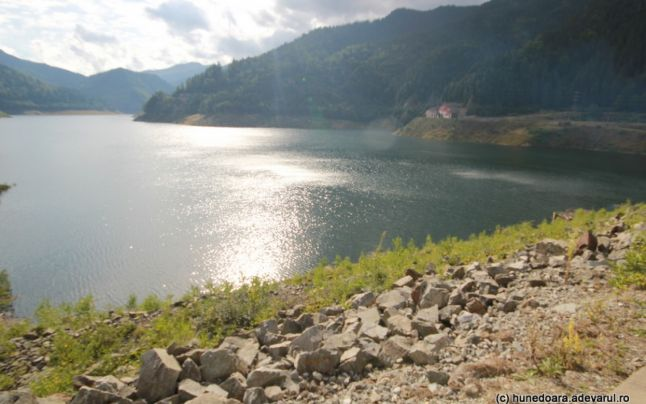
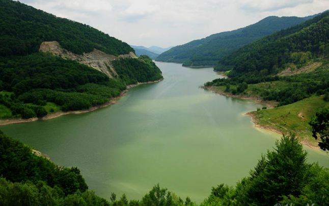
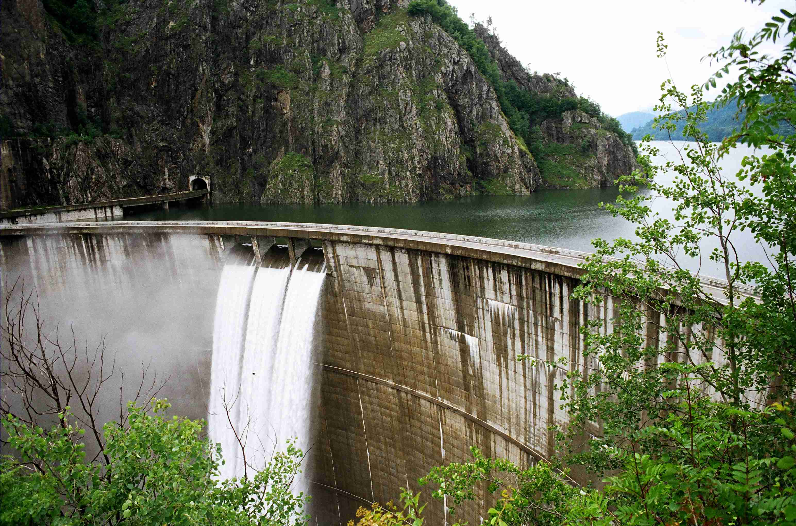

Izvorul Muntelui
Este un baraj de greutate construit din beton și unește Muntele Gicovanu cu Obcina Horștei, fiind situat în amonte de confluența pârâului Izvorul Muntelui cu Bistrița.[2] A fost construit între 1950 și 1960, are o înălțime de 127 m, o lungime de 435 m la coronament și o lățime maximă la bază de 119 m (la nivelul blocurilor deversoare), respectiv 115 m (la nivelul blocurilor nedeversoare). Geologic este situat într-o zonă cu predominanță de gresii silicioase (gresie de Tarcău)[3], restul fiind pachete de șisturi argiloase și un strat de conglomerate. Terenul de fundație prezintă o puternică fisurație

Portile de fier I
Hidrocentrala Porțile de Fier I (în sârbă Хидроелектрана Ђердап) este cea mai mare hidrocentrală de pe fluviul Dunărea și are o putere instalată de 1080 MW. În aval există și hidrocentrala Porțile de Fier II, cu puterea instalată de 250 MW. Ambele hidrocentrale sunt exploatate în parteneriat cu partea sârbă, centralele română și sârbă la Porțile de Fier I cumulând 2160 MW, iar cele de la Porțile de Fier II cumulând 500 MW; capacitatea maximă a turbinelor este de 8700 m³/s. Centrala Porțile de Fier I este amplasată la 15 km amonte de orașul Drobeta Turnu-Severin, iar centrala Porțile de Fier II la 60 km în aval.[1] Navigația pe Dunăre este asigurată prin ecluze realizate pe ambele maluri la ambele obiective, ele având împreună o capacitate de trafic de 52,4 milioane tone/an pentru ecluzarea pe câte un sens și 37.2 milioane tone/an pentru ecluzarea în ambele sensuri.
Barajul Poiana Teiului
Topoliceni – Poiana Teiului este cea de a doua treaptă a sectorului şi se compune din barajul Topoliceni care acumulează în lac cca 800.000 mc de apă; este un baraj de tip stăvilar cu prag înecat, echipat cu stavile segment cu clapetă de 16,00 x 4,75 + 2,25 m. Priza de apă face parte din corpul barajului în continuarea buzunarului de spălare. Barajul este prevăzut cu scară de peşti. Legătura cu malul stîng este realizată printr-un dig de cca 6,50 m înălţime protejat cu pereu de beton spre amonte şi cu etanşare de beton sau gelbeton în adîncime, Aducţiunea Topoliceni –Poiana Teiu-lui are o lungime de 1.927 m cu un Øi=6,20 m şi a fost executată prin excavarea în două trepte, apoi betonată. Castelul de echilibru este aerian de tip cilindric cu Øi=26,00 m şi H=17,90 m, împărţit în două zone pentru ruperea presiu-nii. Partea inferioară este o structură com-plexă prevăzută cu vute şi branşamente la camera superioară. Hidrocentrala Poiana Teiului este de tip semiîngropat pe derivaţie cu conducte forţate şi casa vanelor incluse într-un corp comun. Clădirea are o înălţime de 36 m, din care 16 m supraterani. Este echipată cu 2 tur-bine de tip Kaplan de 5 MW.

Gura Apelor
Povestea lacului Gura Apelor (420 de hectare) din Retezat a început în 1974, când statul român a decis, prin Hotărârea Consiliului de Miniştri nr. 759, amenajrea hidroenergetică a Râului Mare – Retezat, care avea să cuprindă barajul Gura Apelor, hidrocentrala subterană Retezat şi hidrocentrala Clopotiva. Un an mai târziu au început lucrările la baraj. „După aproape 11 ani de activitate, în care s-au dăltuit în granitul munţilor zeci de kilometri de galerii şi s-au înălţat în calea apelor un baraj de anrocamente şi miez de argilă, atunci cel mai mare din Europa, la 16 aprilie 1986 îşi închide porţile galeria de deviere şi apele Râului Mare Retezat sunt zăgăduite. Atunci a început acumularea apelor în lacul care va avea în final un volum de peste 210 milioane metri cubi de apă şi o suprafaţă de 420 de hectare”, informa Hidroconstrucţia.


Siriu
Lacul Siriu (420 de hectare) este situat pe râul Buzău, aflat pe teritoriul comunei Siriu şi s-a format în perioada 1982 - 1994, după construcţia barajului de la Siriu şi apoi a hidrocentralei Nehoiaşu. Barajul a fost realizat prin unirea celor doi munţi din apropiere, masivul Podul Calului şi masivul Siriu. Odată cu construirea barajului Siriu, aproximativ 300 de gospodării au fost strămutate, la mijlocul anilor 1970. ”Toată lumea ştie că aici au început lucrările uneia dintre cele mai spectaculoase amenajări hidroenergetice de aces fel din ţară. La începutul deceniului următor, întinderilor pitoreşti li se va adăuga un lac uriaş, acumulând milioane de metri cubi de apă, creaţie a minţii şi mâinilor omului. O realitate care se anunţă, dar care în conştiinţa localnicilor aparţine deja prezentului. Mai bine de 300 de gospodării urmează să fie scoase, pe etape, din zona viitorului lac. Şi trebuie să recunoaştem că asemenea decizie nu se poate înfăptui oricum. Oamenii se desprind greu de tot ceea ce au înfăptuit de o viaţă. Sunt momente de trăire intensă, dar şi de răzbatere spre înţelegere”, relata jurnalistul Lazăr Băciucu în reportajul său din Viaţa Buzăului, publicat în 1974.
Barajul Vidraru
Lacul Vidraru este un lac de acumulare creat în anul 1965 de Barajul Vidraru în județul Argeș, pe râul Argeș, pentru producția de energie electrică, irigații și prevenirea inundațiilor. De asemenea, lacul și instalațiile adiacente sunt folosite pentru recreere, turism și sporturi. Situat între Munții Frunții și Masivul Ghițu, lacul adună apele râurilor Capra, Buda și ale câtorva afluenți direcți (Râul Doamnei, Cernatul și Vâlsanul, Topologul, râul Valea lui Stan și Limpedea), cu un debit total de cca 5,5 m3/s. Suprafața totală a lacului este de 893 ha, lungimea de 10,3 km, lațimea maximă de 2,2 km în zona Valea Lupului – Călugărița și o circumferință de 28 km. Adâncimea maximă a apei este de 155 m lânga barajul curbat înalt de 166 m, cu o lungime la coronament de 307 metri. Volumul apei este de 465 milioane mł. Nivelul normal de retenție este de 830,00 metri deasupra nivelului mării (mdM). Construirea barajului Vidraru a durat cinci ani și jumătate începând în anul 1960[1]. Pentru această realizare au fost necesare 42 km de tunel subteran, au fost excavate 1.768.000 de m3 de rocă, din care aproximativ 1 milion în subteran, s-au turnat 930.000 m3 de beton din care 400.000 de m3 în subteran și, de asemenea, au fost instalate 6300 de tone de echipament electromecanic. La data de finalizare aceasta s-a situat, masurat la înălțime, aproximativ pe locul 8 în Europa și pe locul al 20-lea în lume. Pe Barajul Vidraru se poate practica sportul extrem de Bungee jumping[2]. Într-un an hidrologic mediu, uzina de energie hidroelectrică Vidraru amplasată subteran poate produce energie electrică de aproximativ 400 GWh. Ea are o capacitate instalată de 220 MW. De la orașul Curtea de Argeș venind spre DN1 (comuna Cărțișoară, SB), drumul care trece prin față uzinei hidroenergetice Vidraru, pe baraj, urmat prin dreapta lacului Vidraru este spectaculosul Transfăgărășan
